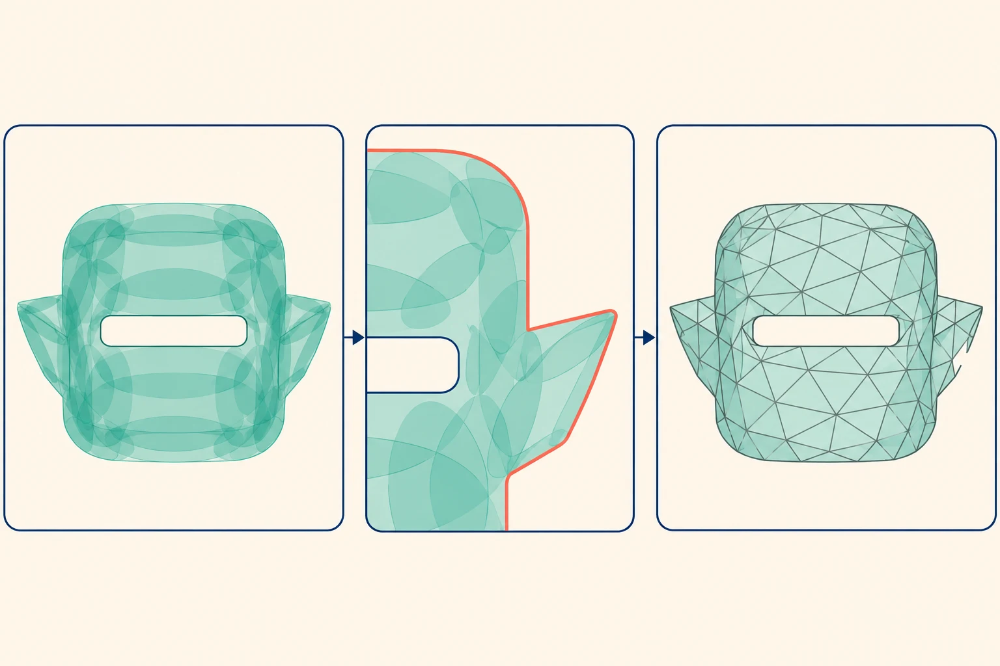
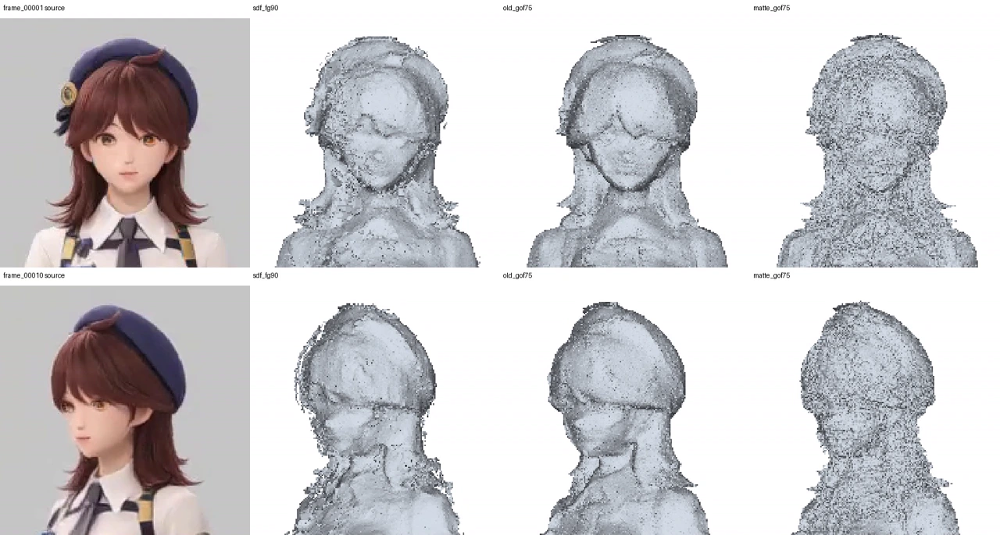
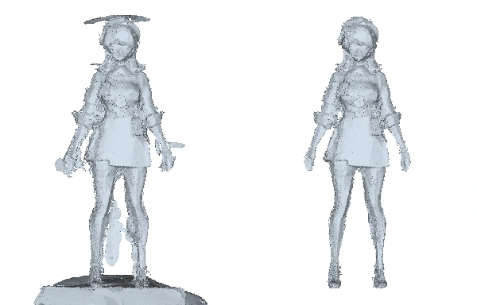

放大查看 ↗
放大查看 ↗两段录像分别保留合成环绕和基线模型的渲染，帽檐、手指和衣摆在侧面最容易暴露差异。
从一张设定图构造训练观测
- 首尾同图LoadImage同一张图接入首帧与末帧
- 构造条件MiniMaxH3ImageToVideo由图像和提示词得到条件与潜变量
- 潜变量采样SamplerCustomAdvanced使用 Orbit LoRA · 28 步
- 解码并存储VAEDecode → CreateVideo → SaveVideo768 × 768 · 24 fps
 放大查看 ↗
放大查看 ↗基线模型与局部外观实验
从高斯场提取可交付网格

放大查看 ↗
放大查看 ↗
放大查看 ↗ 放大查看 ↗
放大查看 ↗ 放大查看 ↗
放大查看 ↗